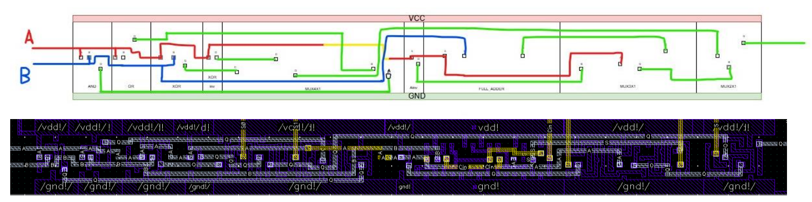
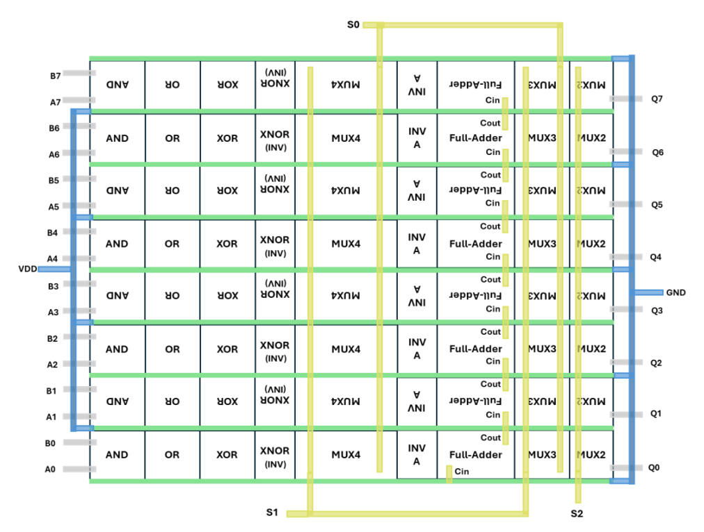
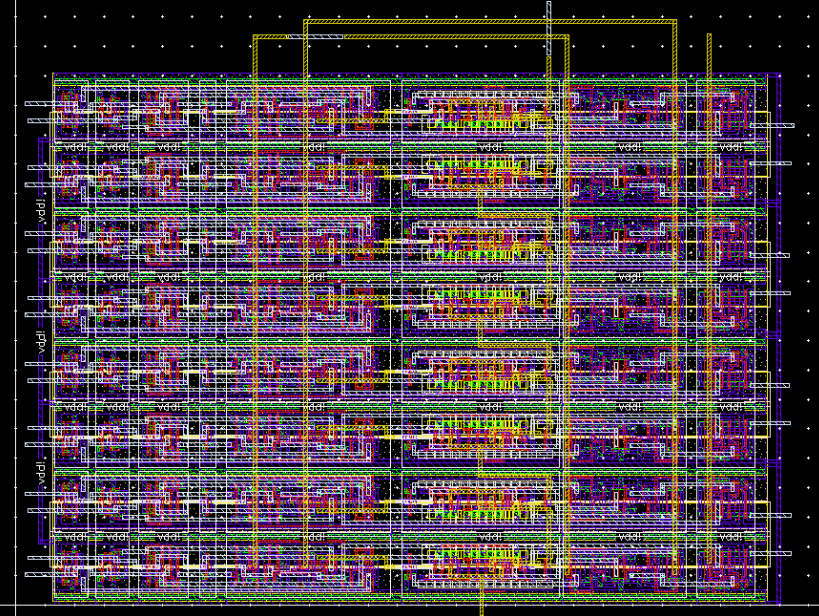
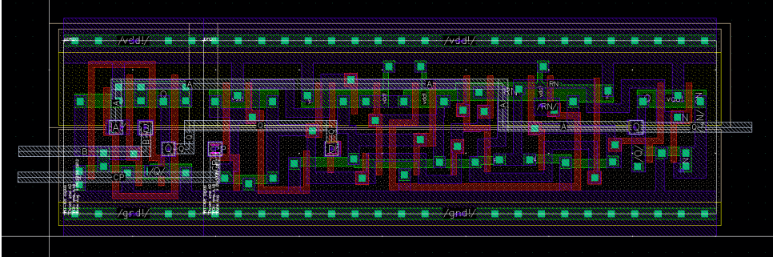
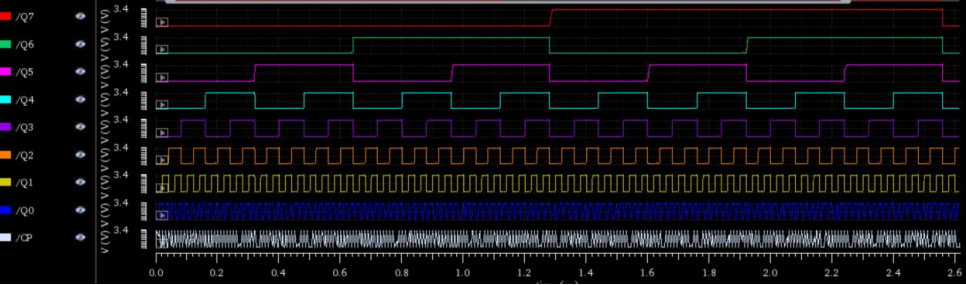

Practice Overview and Objectives
This set of laboratory practices develops, implements, and characterizes the fundamental blocks of a CMOS microcontroller using both full-custom and standard-cell design inside the Cadence environment. The main goal was to physically and functionally design and verify a complete 8-bit ALU and a synchronous 8-bit counter, as well as the logic gates and combinational modules required for their operation.
Learning Cadence and the Design Flow
The project was carried out entirely in the Cadence Virtuoso suite (schematics, simulation, parasitic extraction, DRC/LVS verification, and full‑custom layout). The practices covered the following workflows and Cadence tools:
- Schematic Capture: hierarchical design of modules (logic gates, full‑adder, bit‑slice, ALU, flip‑flops).
- Transient & DC Simulations: delay characterization (tHL, tLH, propagation delay), static and dynamic power measurements.
- Layout & DRC/LVS: full-custom layout generation, rule verification (DRC) and schematic‑layout equivalence checks (LVS).
- Parasitic Extraction: obtaining realistic delays and power consumption using extracted capacitances (2–3 fF loads).
- Power Analysis: computation of average and peak power using Cadence’s calculator with dynamic input vectors.
This workflow provided practical experience moving from logical design to a verified physical implementation, understanding how topology and transistor sizing affect delay, and how layout decisions impact parasitics, power consumption, and performance.
Components Developed
- Full‑custom CMOS gates: Inverter, NAND, and NOR (layout + delay characterization).
- Full‑custom 1‑bit Full Adder (symmetric topology, Euler paths, optimized layout).
- Multiplexers (2:1, 3:1, 4:1), selector and tri‑state buffer using standard cells where appropriate.
- 8‑bit ALU implemented using a bit‑slice architecture, supporting 7 operations.
- D‑Flip‑Flop and T‑Flip‑Flop (implemented using a DFF + XOR), and the synchronous 8‑bit counter.
Focus on the 8‑bit ALU
Technical description and key design details.
Architecture and Bit‑Slice Structure
The ALU was designed using a bit‑slice structure, replicating an identical 1‑bit block containing the full‑adder, logic operations, and multiplexers required for operation selection. This approach improves modularity and simplifies testing and scalability.
Supported Operations
The ALU supports 7 operations selected by 3 control signals (S0, S1, S2): AND, OR, XOR, XNOR, Load A, Invert A, and A+B addition. Multiplexers (4:1, 3:1, and 2:1) consolidate logic and arithmetic outputs into the final 8‑bit result.
Full‑Adder Design
The full‑adder was implemented full‑custom using a symmetric transistor topology to balance rise/fall delays. The design process included:
- Analysis of FA topologies (logic‑gate based vs transmission‑gate based).
- Transistor sizing: pMOS set to ~2× the width of nMOS to compensate carrier mobility.
- Use of Euler paths to create a compact transistor ordering for layout.
- LVS verification and parasitic extraction prior to final simulation.
Characterization
The full ALU was characterized for area, static and dynamic power, and timing. The critical path is dominated by the chained propagation of carry through the 8 full‑adders and the final multiplexer.

1-Bit ALU distribution and layout

8-Bit ALU distribution

8-Bit ALU layout
Focus on the 8‑bit Synchronous Counter
Design, implementation and performance results of the counter feeding the microcontroller ROM.
Topology and Functionality
The 8‑bit counter was implemented using T‑Flip‑Flops. Each T‑Flip‑Flop was built from a standard‑cell D‑Flip‑Flop (DFCX1) and a 2‑input XOR gate. The clock and reset signals are shared across all 8 stages, ensuring synchronous counting.
Timing Characterization
Key timing parameters measured during the practice:
- D‑Flip‑Flop (DFCX1): tprop ≈ 0.5069 ns; tsetup ≈ 0.115 ns; thold ≈ 0.075 ns.
- T‑Flip‑Flop (DFF + XOR): tprop ≈ 0.5616 ns; tsetup ≈ 0.433 ns; thold ≈ 0 ns (due to XOR propagation).
Maximum Frequency and Performance
Taking into account T‑FF setup and propagation times and the delay of the AND gates that generate the T inputs, the maximum theoretical frequency of the counter was calculated to be approximately 420 MHz. Practical simulations were performed at 20 MHz with 3 fF loads for power analysis.
Layout and Clock Considerations
To minimize clock skew and wire resistance, the clock and reset networks were routed using higher metal layers and straight paths. The counter layout arranges all modules horizontally, reducing area and simplifying routing.
Results
The final layout is compact, electrically correct (DRC/LVS), and shows power consumption consistent with the expected switching activity. The design prioritizes robust clock distribution and synchronous operation.

1-Bit Flip-Flop Type T layout

8-Bit Flip-Flop Type T schematic

8-Bit Flip-Flop Type T simulation
Project Roadmap
Design progression from basic logic gates to full 8-bit ALU and counter.
Phase 1: CMOS Logic Gates
- Design of inverter, NAND and NOR using full-custom CMOS
- Simulation of HL/LH delays with 3 fF load
- Layout generation and DRC/LVS verification
Phase 2: Combinational Blocks for ALU
- Design of selectors, multiplexers and tri-state buffers
- Full-custom 1-bit Full Adder design
- Characterization: area, power, and propagation delay
Phase 3: 8-bit ALU
- Bit-slice architecture for scalability
- Implementation of 7 logic/arith operations
- Complete layout optimization
Phase 4: Sequential Design
- Flip-Flop D characterization
- Flip-Flop T implementation using XOR
- Setup, hold and propagation delay analysis
Phase 5: 8-bit Counter
- Synchronous T-flip-flop 8-bit counter
- Maximum frequency: 420 MHz
- Optimized layout and routing for clock/reset
Project Gallery
Layouts, simulations and schematics of the implemented blocks.

Inverter Layout

Full Adder Layout
8-bit ALU

8-bit Counter
Technical Challenges & Solutions
Layout Optimization
Minimizing interconnect lengths and parasitic capacitances was essential for high-frequency operation.
Carry Propagation in the ALU
The worst-case propagation delay occurs across the 8 chained full-adders. Careful design reduced critical path impact.
Clock Distribution in Counter
Uniform clock arrival was ensured by routing clock/reset in higher metal layers to minimize skew and resistance.
Transistor Sizing
Sizing PMOS wider ensured balanced HL/LH delays in gates despite mobility differences.